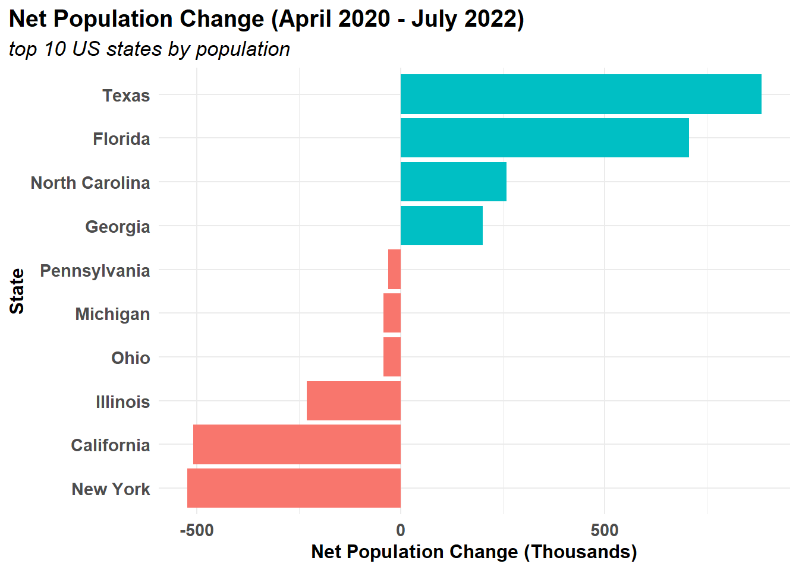
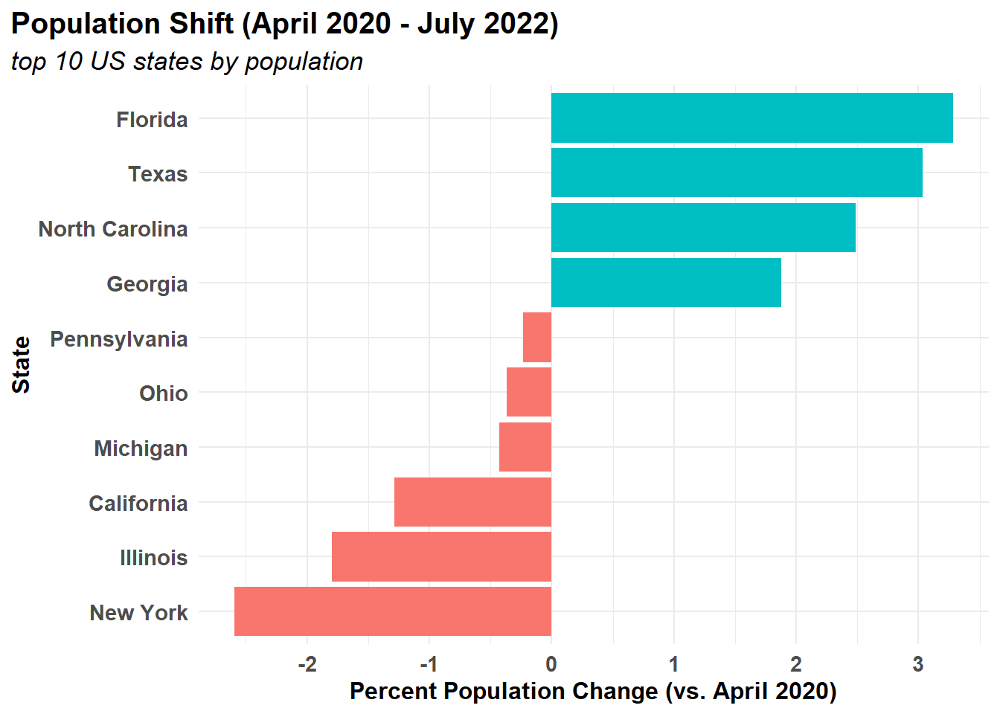
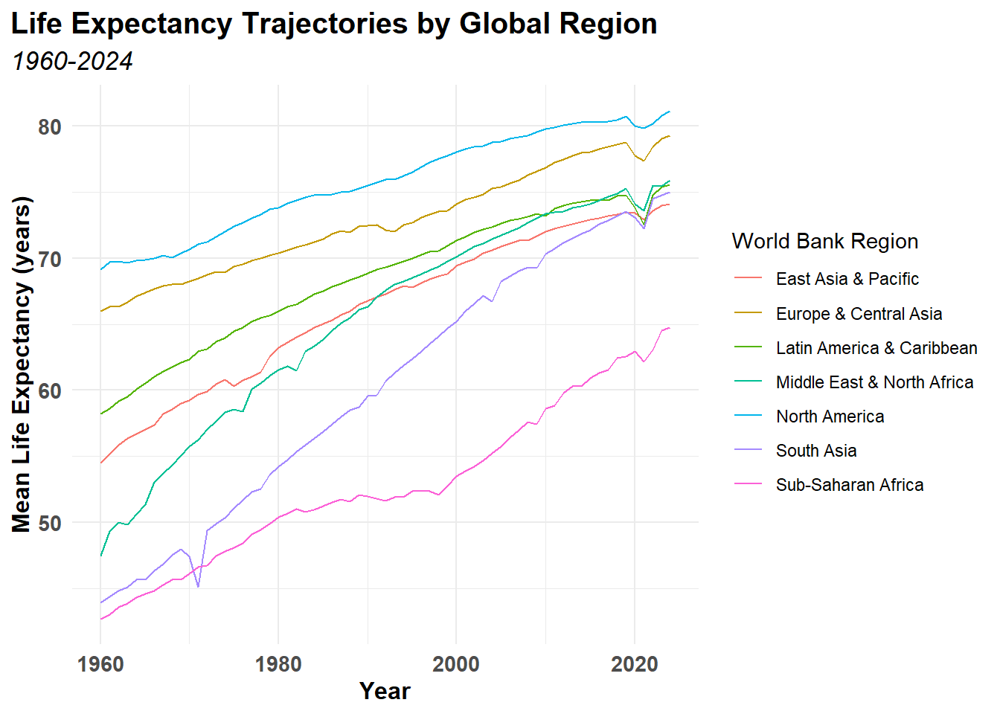
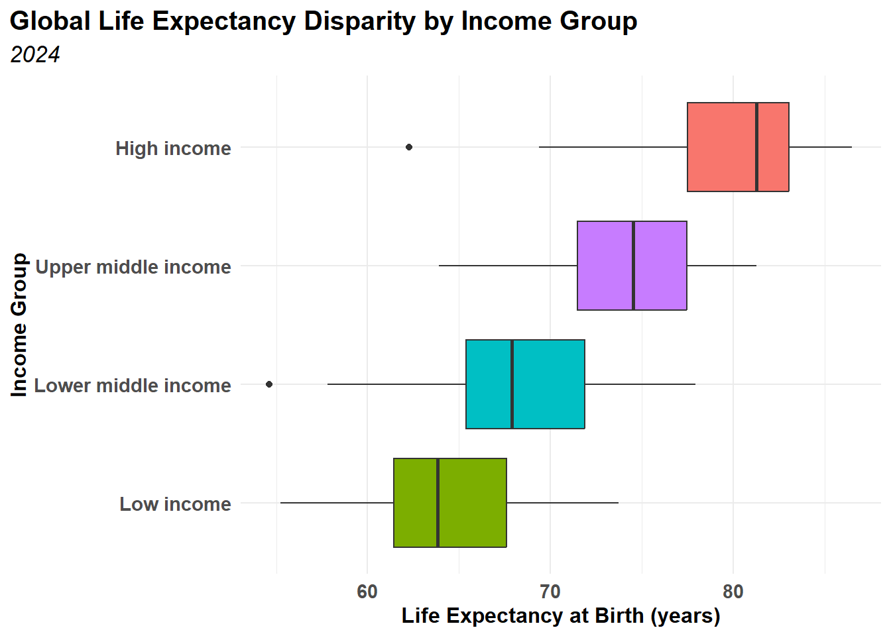

The primary objective of this process is to transform three independent, wide data sets into formats ready for downstream analysis. Wide data sets are retrieved as .CSV files. The three selected data sets include synthetic Business Cost and Revenue data, 2022 US Census data, and World Bank Life Expectancy data. Each data set, after import, will be tidied according to standard conventions. Certain aspects of each data set will be analyzed: from the World Bank Data, rates of life expectancy across regions could be compared, while the US Census data could be analyzed for population growth momentum, and cost and revenue temporal trends could be determined for the business data set.
Anticipated challenges include initial import of unwieldy .CSV files. For instance, some may have header text that must be ignored when importing. Additionally, the World Bank data is separated into three distinct .CSV files, so joining these sets together as data frames may be necessary.
Approach
Import each data set
Tidy each data set
Analyze each data set
Visualize each data set
Present findings and recommendations for each data set
Codebase
Data Import
Data Sources
Data set 1 (2022 US Census data) was sourced from a discussion board post by Anastasiia Gmyrina. Data set 2 (Business Costs Revenue data) was sourced from a discussion board post by Jocelyn Slater. Data set 3 (World Bank Life Expectancy data) was sourced from a discussion board post by Ummay Rukiya. Data set 3 requires multiple imports for multiple .CSV files, and certain files have header information that requires skipping those rows.
There are 265 rows in the first .CSV file of data set 3:
Code
nrow(csv_data_3a)
[1] 265
There are 264 rows in the second .CSV file of data set 3:
Code
nrow(csv_data_3b)
[1] 264
There is only 1 row in the third .CSV file for data set 3:
Code
nrow(csv_data_3c)
[1] 1
Representative Sample
The first 9 rows for the 5 columns from data set 1 are displayed below:
Code
knitr::kable(head(csv_data_1,9))
Rank
Geographic Area
April 1, 2020 (Estimates Base)
July 1, 2021
July 1, 2022
1
California
39538245
39142991
39029342
2
Texas
29145428
29558864
30029572
3
Florida
21538226
21828069
22244823
4
New York
20201230
19857492
19677151
5
Pennsylvania
13002689
13012059
12972008
6
Illinois
12812545
12686469
12582032
7
Ohio
11799374
11764342
11756058
8
Georgia
10711937
10788029
10912876
9
North Carolina
10439414
10565885
10698973
The first 5 rows of the first 5 columns of data set 2 are displayed below:
Code
knitr::kable(csv_data_2[1:5, 1:5])
Location
Name
Jan Cost
Jan Revenue
Feb Cost (k)
Boston
Bobby
29000
50000
50.0
Chicago
Denise
41000
45000
50.6
LA
Ethan
30500
39000
31.0
New York
April
19000
31500
22.0
Dallas
Emma
38000
42000
16.0
The first 9 rows of the first 4 columns of the first .CSV file from data set 3 are displayed below:
Code
knitr::kable(csv_data_3a[1:9, 1:4])
Country Name
Country Code
Indicator Name
Indicator Code
Aruba
ABW
Life expectancy at birth, total (years)
SP.DYN.LE00.IN
Africa Eastern and Southern
AFE
Life expectancy at birth, total (years)
SP.DYN.LE00.IN
Afghanistan
AFG
Life expectancy at birth, total (years)
SP.DYN.LE00.IN
Africa Western and Central
AFW
Life expectancy at birth, total (years)
SP.DYN.LE00.IN
Angola
AGO
Life expectancy at birth, total (years)
SP.DYN.LE00.IN
Albania
ALB
Life expectancy at birth, total (years)
SP.DYN.LE00.IN
Andorra
AND
Life expectancy at birth, total (years)
SP.DYN.LE00.IN
Arab World
ARB
Life expectancy at birth, total (years)
SP.DYN.LE00.IN
United Arab Emirates
ARE
Life expectancy at birth, total (years)
SP.DYN.LE00.IN
The first 6 rows of 5 of the 6 columns of the second .CSV file from data set 3 are displayed below. One of the columns was removed prior to sampling because it contained new-line characters (e.g. “\n”), causing the knitr table to crash when displaying. This column removal was accomplished by selecting all columns but the problematic ‘SpecialNotes’ column.
The only row of the first 2 columns of the third .CSV file from data set 3 are displayed below. The remaining columns contained new-line characters (e.g. “\n”), causing the knitr table to crash when displaying.
Code
knitr::kable(csv_data_3c[1:1, 1:2])
INDICATOR_CODE
INDICATOR_NAME
SP.DYN.LE00.IN
Life expectancy at birth, total (years)
Data Transformation
The raw .CSV data for data set 1 is transformed initially by cleaning the names, renaming a few columns, and removing the rank column. This column was removed because it provided a numerical rank that would be rendered meaningless during the subsequent transformation: the frame is pivoted longer and a new date column is created to capture the old variable names.
Code
df_1 <- csv_data_1 |> janitor::clean_names() |># clean namesrename(area = geographic_area, # rename areaapril_1_2020 = april_1_2020_estimates_base) |># rename april_1select(-rank) # remove rank columndf_1b <- df_1 |>pivot_longer( cols =2:4, # columns to pivotnames_to ="dates", # names become datesvalues_to ="count"# values become count ) |>mutate(dates =mdy(dates)) # dates reformatteddf_1c <- df_1b |>group_by(dates) |># group by datesmutate (total =sum(count, na.rm =TRUE), # sum across datesprop = count/total, # calc proportionmonths =interval(ymd("2020-04-01"),dates) /months(1) # define months since estimate base )df_1d <- df_1c |>group_by(area) |># group by areaarrange(dates, .by_group =TRUE) |># arrange by date within groupmutate(count_growth = (count-lag(count))/(months-lag(months))/1000, # Thousands of pop growth/monthprop_growth = (prop-lag(prop))/(months-lag(months))*100# Prop growth %age ) |>ungroup()knitr::kable(head(df_1d))
area
dates
count
total
prop
months
count_growth
prop_growth
California
2020-04-01
39538245
179266413
0.2205558
0
NA
NA
California
2021-07-01
39142991
179241704
0.2183810
15
-26.35027
-0.0144983
California
2022-07-01
39029342
179936948
0.2169057
27
-9.47075
-0.0122949
Florida
2020-04-01
21538226
179266413
0.1201465
0
NA
NA
Florida
2021-07-01
21828069
179241704
0.1217801
15
19.32287
0.0108908
Florida
2022-07-01
22244823
179936948
0.1236257
27
34.72950
0.0153798
The raw .CSV data for data set 2 is transformed initially by cleaning the names, renaming a few columns, and removing the feb_cost_k and march_cost_k columns after recasting them into the same units as the other columns. The frame is pivoted longer and a new date column is created.
Code
df_2 <- csv_data_2 |> janitor::clean_names() |>mutate (feb_cost = feb_cost_k *1000, # recalc costmarch_cost = march_cost_k *1000# recalc cost ) |>select(-c(feb_cost_k, march_cost_k)) # remove columnsdf_2b <- df_2 |>pivot_longer(cols =-c(location, name), # not location nor namenames_to =c("month", ".value"), # make months and cost/rev columnsnames_sep ="_"# column name separator )year <-as.integer(2026) # define yearday <-as.integer(1) # define daydf_2c <- df_2b |>mutate(month_num =match( # find month numberstr_sub(str_to_lower(month), 1, 3), # use first three lower case letterstr_to_lower(month.abb) # compare to abbreviations for months ),date =make_date(year, month_num, day), # make date columnprofit = revenue-cost, # make profit columnppc = profit/cost # calc profit per cost ) |>select(date, # select needed columns name, location, cost, revenue, profit, ppc)knitr::kable(head(df_2c))
date
name
location
cost
revenue
profit
ppc
2026-01-01
Bobby
Boston
29000
50000
21000
0.7241379
2026-02-01
Bobby
Boston
50000
52000
2000
0.0400000
2026-03-01
Bobby
Boston
40000
48000
8000
0.2000000
2026-04-01
Bobby
Boston
50000
53000
3000
0.0600000
2026-05-01
Bobby
Boston
25000
6150000
6125000
245.0000000
2026-06-01
Bobby
Boston
45000
44000
-1000
-0.0222222
Upon inspection, it appears a data entry error occurred in the data for Bobby in Boston from May. The reported revenue is $6,150,000, while the cost is only $25,000. Before fixing this entry error, a check will be performed to see if any other values exceed reasonable limits.
Only that single row contains misleading data. Next, the data error is fixed using an if_else() function to match the row to its descriptors.
Code
df_2c <- df_2c |>mutate(revenue =if_else( # replace using if logic name =="Bobby"&# match name location =="Boston"&# match locationmonth(date) ==5&# match month revenue ==6150000, # match revenue61500, # replace revenue revenue), # else:: keep same revenue profit = revenue - cost, # redefine profitppc = profit / cost # redefine ppc )knitr::kable(head(df_2c))
date
name
location
cost
revenue
profit
ppc
2026-05-01
Bobby
Boston
25000
61500
36500
1.4600000
2026-03-01
Ethan
LA
60000
65000
5000
0.0833333
2026-04-01
Ethan
LA
60000
58000
-2000
-0.0333333
2026-02-01
Emma
Dallas
16000
58000
42000
2.6250000
2026-06-01
Ethan
LA
62000
55000
-7000
-0.1129032
2026-04-01
Bobby
Boston
50000
53000
3000
0.0600000
The raw .CSV data for data set 3 is transformed initially by removing unnecessary columns: an extra, empty column with a header containing the string “…”, and indicator code and name columns. These columns were removed because they contained redundant information. Next, the frame is pivoted longer and the names are cleaned. A new date column is created to using January 1st for each year.
Code
df_3 <- csv_data_3a |>select(-starts_with("...")) |># Remove extraneous columnselect(-c("Indicator Code", # Remove indicator code column"Indicator Name")) # Remove indicator name columndf_3b <- df_3 |>pivot_longer(cols =-c("Country Name", # pivot the country name"Country Code"), # pivot the country codenames_to ="Year", # make new column yearvalues_to ="Life Expectancy"# make new LE column ) |> janitor::clean_names() # clean namesmonth_num <-as.integer(1) # set januarydf_3c <- df_3b |>mutate(date =make_date(year, # create date month_num, day), )knitr::kable(head(df_3c))
country_name
country_code
year
life_expectancy
date
Aruba
ABW
1960
64.049
1960-01-01
Aruba
ABW
1961
64.215
1961-01-01
Aruba
ABW
1962
64.602
1962-01-01
Aruba
ABW
1963
64.944
1963-01-01
Aruba
ABW
1964
65.303
1964-01-01
Aruba
ABW
1965
65.615
1965-01-01
Before joining data from the second .CSV file in data set 3, a data frame is formed by selecting only the necessary columns and cleaning their column names. Then, the two data frames from each of the first two .CSV files of data set 3 are joined by the country code.
Code
df_4 <- csv_data_3b |>select(c("Country Code", # keep columns"Region", "IncomeGroup")) |> janitor::clean_names() # clean namesdf_3d <- df_3c |>left_join( # join dfs df_4, by ="country_code"# by country code ) |>arrange(date) # sort by dateknitr::kable(head(df_3d))
country_name
country_code
year
life_expectancy
date
region
income_group
Aruba
ABW
1960
64.04900
1960-01-01
Latin America & Caribbean
High income
Africa Eastern and Southern
AFE
1960
44.16966
1960-01-01
NA
NA
Afghanistan
AFG
1960
32.79900
1960-01-01
Middle East & North Africa
Low income
Africa Western and Central
AFW
1960
37.77964
1960-01-01
NA
NA
Angola
AGO
1960
37.93300
1960-01-01
Sub-Saharan Africa
Lower middle income
Albania
ALB
1960
56.41300
1960-01-01
Europe & Central Asia
Upper middle income
Analysis
Data set 1: US Census Data 2022
First, the data set is summarized by determining the beginning population (2020), final population (2022), net change in thousands of people, percent change, and average monthly change in thousands of people. The results are displayed in the table below:
Table 1: US Top 10 States Population Growth (2020-2022)
area
start_pop_2020
end_pop_2022
net_change_k
pct_change
avg_monthly_k
Florida
21538226
22244823
706.597
3.2806648
27.026183
Texas
29145428
30029572
884.144
3.0335598
33.394033
North Carolina
10439414
10698973
259.559
2.4863369
9.761033
Georgia
10711937
10912876
200.939
1.8758419
7.738358
Pennsylvania
13002689
12972008
-30.681
-0.2359589
-1.356458
Ohio
11799374
11756058
-43.316
-0.3671042
-1.512900
Michigan
10077325
10034113
-43.212
-0.4288043
-1.468658
California
39538245
39029342
-508.903
-1.2871158
-17.910508
Illinois
12812545
12582032
-230.513
-1.7991195
-8.554075
New York
20201230
19677151
-524.079
-2.5942925
-18.972142
The US Census data is visualized in two plots, each showing the population change over the multi-year collection process. In the first, the total net population in thousands of people is shown.
Code
summary_1d |>ggplot(aes(x=reorder(area, net_change_k), y = net_change_k, fill = net_change_k >0)) +geom_col(show.legend =FALSE) +theme_standard() +labs(title ="Net Population Change (April 2020 - July 2022)",subtitle ="top 10 US states by population",x ="State",y ="Net Population Change (Thousands)") +coord_flip()

Figure 1: Net Population Change (April 2020 - July 2022)
In the second, the percent population change of each of the top 10 US states is shown.
Code
summary_1d |>ggplot(aes(x=reorder(area, pct_change), y = pct_change, fill = net_change_k >0)) +geom_col(show.legend =FALSE) +theme_standard() +labs(title ="Population Shift (April 2020 - July 2022)",subtitle ="top 10 US states by population",x ="State",y ="Percent Population Change (vs. April 2020)") +coord_flip()

Figure 2: Population Shift (April 2020 - July 2022)
Data set 2: 2026 Business Performance
Business data is analyzed to determine total revenue, cost, and profit figures, as well as average profit per cost rates. The summary of this data is provided below:
Figure 3: Monthly Profit Trajectory by Representative (2026)
Data set 3: World Bank Life Expectancy
First, this data set is aggregated by region before summarizing, so rows without region or life expectancy observations are initially filtered out. The resulting data frame is then summarized by the mean of the life expectancy values for each region. The summary is displayed below:
The first visualization shows the life expectancy trajectory for each World Bank region between 1960 and 2024.
Code
region_summary_3d |>ggplot(aes(x = date, y = mean_le, color = region)) +geom_line() +theme_standard() +labs(title ="Life Expectancy Trajectories by Global Region",subtitle ="1960-2024",x ="Year",y ="Mean Life Expectancy (years)",color ="World Bank Region" )

Figure 4: Life Expectancy Trajectories by Global Region
A second visualization reveals the disparity in life expectancy by income group using a box-plot:
Code
last_year =max(region_summary_3d$date)country_df <- df_3d |>filter(!is.na(region), !is.na(life_expectancy)) |>filter(date == last_year, !is.na(income_group))country_df |>ggplot(aes(x =reorder(income_group, life_expectancy, FUN = median), y = life_expectancy, fill = income_group)) +geom_boxplot(show.legend =FALSE) +theme_standard() +labs(title ="Global Life Expectancy Disparity by Income Group",subtitle =year(last_year),x ="Income Group",y ="Life Expectancy at Birth (years)" ) +coord_flip()

Figure 5: Global Life Expectancy Disparity by Income Group
Findings and Recommendations
Data set 1 (US Census)
The US Census data from 2020-2022 shows clear interstate migration patterns. States like Texas and Florida saw monthly influxes exceeding 25,000 people. With population changes of over 700,000 net people (Table 1 ), Florida and Texas also show the greatest net postive percentage changes of over 3.0%, respectively (Figure 2). Meanwhile, states like California, New York, and Illinois experienced net exoduses over the same period: California and New York each exceeded a net loss of over one half million people during this time frame (Figure 1), while New York exhibited the greatest percentage loss of over 2.5% from 2020 (Figure 2).
This project could be expanded in the future to by incorporating more historical data (e.g. census data from before 2020). Aggregate population growth rates could be compared to stratified data by state.
Data set 2 (2026 Business Performance)
The business data encountered in data set 2 required cleaning, tidying, and dealing with erroneous observations. After correcting for a data entry error, performance for each representative is visualized. While Bobby in Boston earned the highest total revenue and greatest profit (Table 2), Emma in Dallas was the most efficient representative, with a profit per cost ratio of 0.60. Heading into June 2026, the trajectory plot shows only one representative with a positive profit momentum, Denise (Figure 3). Conversely, the representative with the greatest negative momentum is Bobby, who had a high profit month in May.
Future work could investigate data validation at the site of data entry to obviate errors like Bobby from Boston’s $6M revenue month. Additionally, this project naturally expands as reporting from new moths is added to the set. Lastly, the data could be aggregated by quarter and compared year-to-year to observe macro trends.
Data set 3 (World Bank Life Expectancy
Global life expectancy has increased dramatically in the over six decades since 1960. Each World Bank Region has demonstrated clear aggregate progress in elevating life expectancy (Figure 4). Notably, all World Bank regions experienced a regression in the immediate period following 2020. This illustrates the global impact of the COVID-19 pandemic of 2020. Summarizing this information reveals that the region with the highest 2024 life expectancy at birth is North America at 81.2 years, and the region with the lowest 2024 life expectancy at birth is Sub-Saharan Africa at 64.8 years ( Table 3). The disparity in life expectancy by income group shows a clear relationship between income level and life expectancy: as income increases, so does life expectancy (Figure 4).
Extending this work by dis-aggregating regions into subsidiary countries could reveal interesting intra-regional trends (e.g. northern countries in Sub-Saharan Africa display higher life expectancy growth rates than southern countries). Additionally, new indicators such as median income or per capita gross domestic product could be joined into the data set to make comparisons between income and life expectancy more numerical.